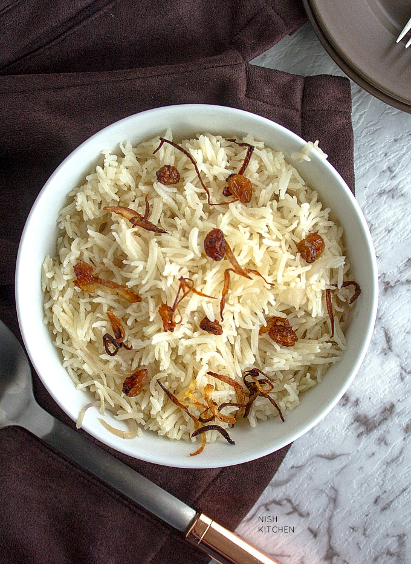

Neychoru

Description
An aromatic savory rice dish made with rice, ghee and spices.
A Malabar special recipe from the Kerala cuisine.
In Malayalam ‘nei’ or ‘ney’ means ghee and ‘choru’ means rice.
This pairs well with any spicy mutton or chicken curry or any vegetable curry.
This ghee rice preparation is very simple and easy to make and every common preparation for special occasions like family gatherings or parties.
If you are looking for a variation from Briyani and Pulav, don’t hesitate.
This recipe is exactly what you ought to try.
Ingredients
- 2 cups of JeerakaSaala Rice or kaima Rice
- 2 tbsp Ghee + 1 tbsp Ghee
- 1 tbsp Oil
- 10 to 15 Cashews & Raisins
- 1/4 cup Chopped Carrots
- 3/4 cup Onion Finely Chopped
- 4 Cardamoms
- 2″ inch Cinnamon Stick
- 3 Cloves
- 1 Star Annise
- 2 Bay Leaf
- 1 tsp Ginger Finely Chopped
- 1/4 tsp Fennel Seeds
- 1/2 of an Onion Finely Chopped
- 3 cups of Water
- Salt as required
Steps
Preparations for rice
- Heat 2 tbsp ghee and 1 tbsp oil in a pan.
- Fry 10 to 15 cashews, 10 to 15 raisins, 1/4 cup chopped carrots (fry for 1 minutes), 3/4 cup finely sliced onion(until it turns crispy & golden) and 2 green chillies separately. Drain from oil and keep them aside.
Making ghee rice
- Heat a heavy bottomed vessel. Pour the excess oil from the pan used for preparations. If you feel the oil is not sufficient add 1 to 3 tbsp ghee.
- Add the whole spice 4 Cardamoms, 2″ inch Cinnamon Stick, 3 Cloves, 1 Star Annise and 2 Bay Leaves. Saute till the spices splutter and crackle.
- Then add 1 tsp Ginger Finely Chopped and 1/4 tsp Fennel Seeds. Saute them for 30 seconds over a low flame.
- Now add 1/2 of an onion thinly sliced and saute until it turns translucent.
- Then add in 3 cups of water. Season with salt as per taste. Check the taste of the water and it should taste slightly salty. If not, then add some salt.
- Add juice of half lemon. This is completely optional.
- Allow it to boil. Once it starts to boil add the drained rice. Mix them well.
- Cover and cook for 15 minutes over a low flame or until rice is 80% cooked.
- Now switch off the flame. Top the rice with fried cashews, raisins, chillies, carrots and fried onions.
- Cover the vessel with a aluminium foil and close it with the lid.
Dum process
- Heat a pan for 5 minutes over a medium flame. Then reduce the flame from medium to low.
- Place the pot on the top of the pan.
- Dum for 15 minutes over a low flame.
- After 15 minutes, switch off the flame.
- Poke the rice with a fork. Soft and fluffy white color flavored ghee rice is ready.
- Serve with a spicy chicken roast.